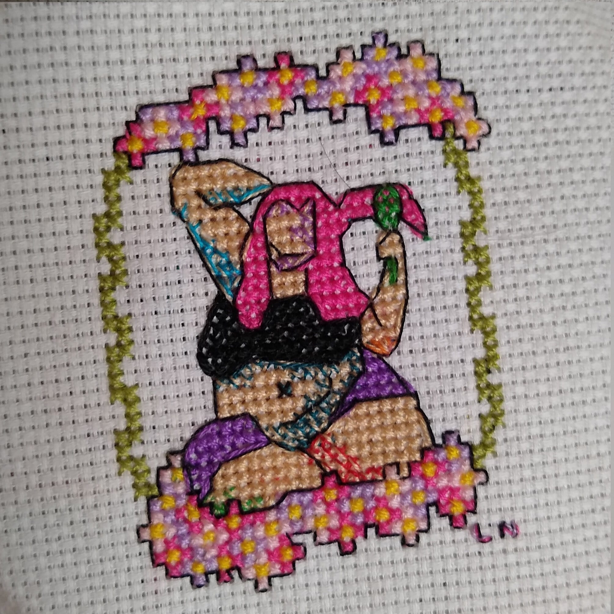
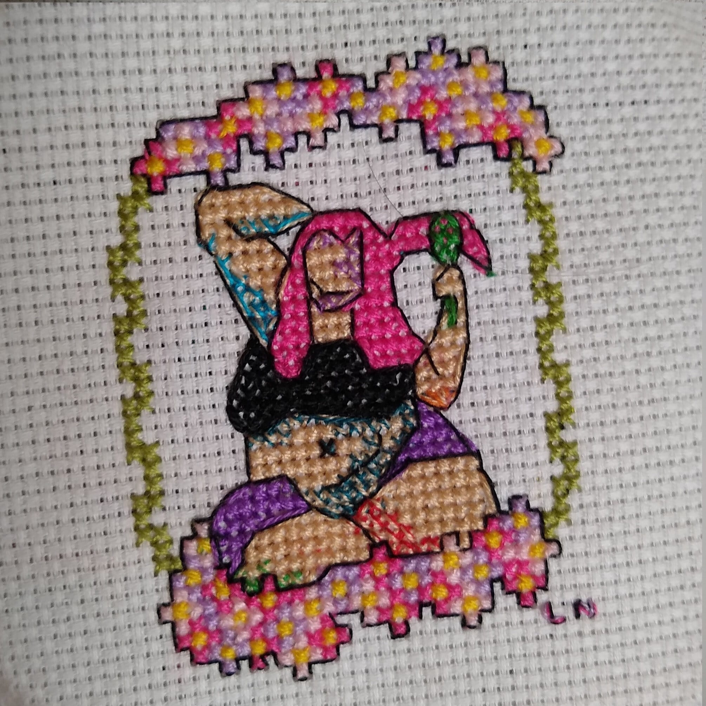

ellen wondra
software engineer. pet herder. crafty.
Crafty
I've been doing assorted crafts for most of my life! Fiber art instructions were the first complex algorithms I followed. Crafting has been a love that has followed me my whole life.
Box Model Cross Stitch
The box model describes the way that different elements on a website relate to each other in space. This cross-stitch represents the box model using colors inspired by the Google Chrome demonstration of the model, but it can be done in many other color combinations.

w-saves Cross-Stitch
The command ":w" saves your document in Vi/Vim. This cheeky cross-stitch helps me remember that.

Seven Times Eight Cross-Stitch
There's a famous proverb, "fall down seven times, get up eight." Well, this is the developer's version of that. In addition to showing the text and the image of a bug, there is an LED element: the bug can light up.


LED Color Theory Cross-Stitch
I am iterating on a design that properly represents hexcode and LED color. Hexcode is made of three combinations of letters and numbers which correspond to an amount of red, blue, and green light. Those lights can combine to create other colors like cyan, yellow, and magenta. I am iterating on size, labels, and positioning to try to make it as legible as possible.


Full-Fat Cheesecake Cross-Stitch
These piece are part of some art depicting fat women that I created for August Adipose 2020. In depicting a fat woman almost like a pin-up, I attempted to stake out some sensual, functional, fun space for fatness.
 
